安装 NpcapInstall Npcap
安装 Npcap，建议在安装时勾选 WinPcap API-compatible Mode。Install Npcap and enable WinPcap API-compatible Mode during setup.
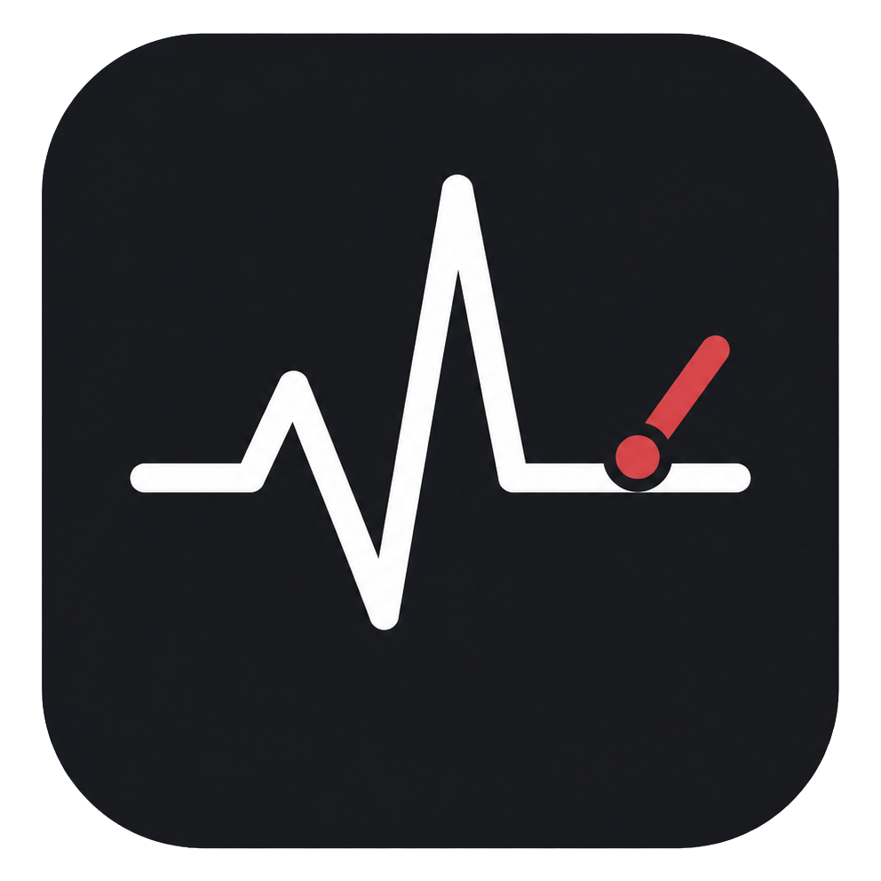
NTE DPS Toolkit记录伤害从哪里来、输出循环损失在哪里，以及不同队伍为什么表现不同。基于 Rust + Tauri + React，所有解析和记录默认都在你的电脑上完成。 See where damage comes from, where a rotation loses time, and why teams perform differently. Built with Rust + Tauri + React; parsing and records stay on your own computer by default.

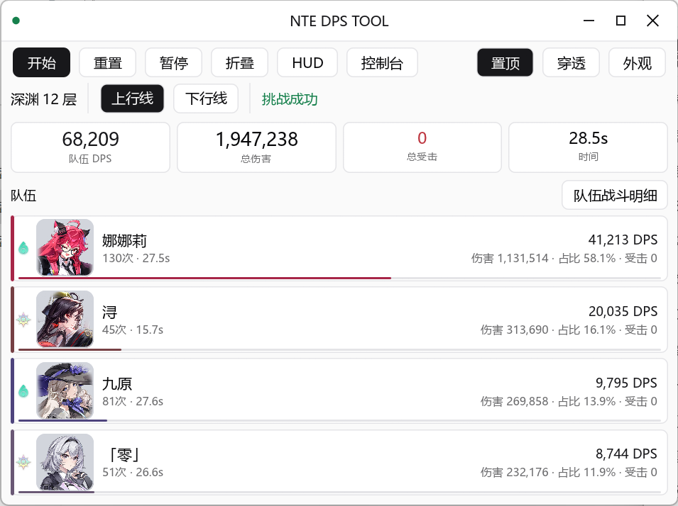
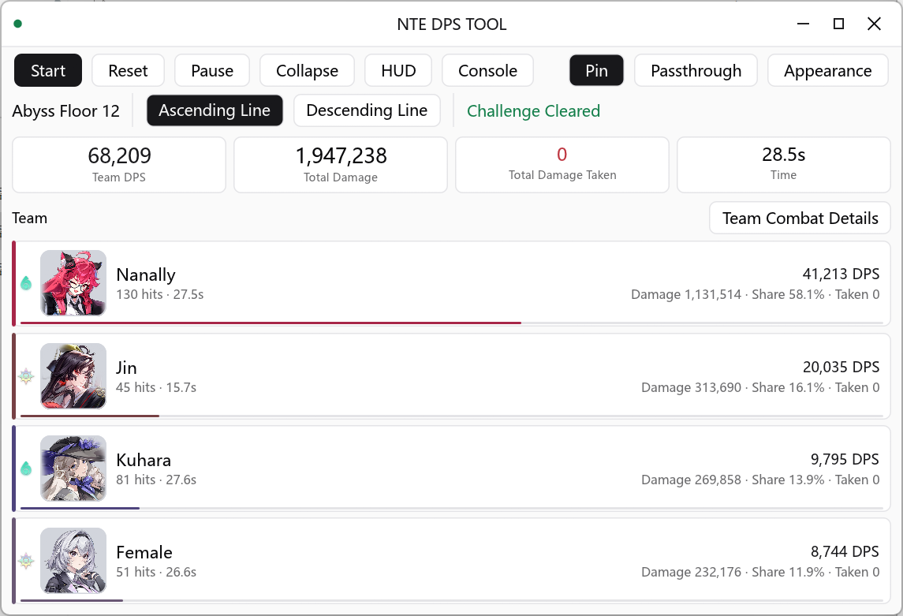
1 开发者测试环境下，当前桌面端空闲内存约为 50 MB，约为旧版的六分之一；实际占用会随系统、WebView 版本和启用功能变化。1 In the developer's test environment, the current desktop app idles at roughly 50 MB RAM, about one sixth of the previous version. Actual usage varies by system, WebView version, and enabled features.
实时计算总伤害、DPS、命中数、受击统计和战斗时长。Live total damage, DPS, hit count, taken-damage, and combat duration.
按角色展示伤害、占比、命中数、DPS、技能分类和可筛选命中明细。Damage, share, hit count, DPS, skill categories, and filterable hit details per character.
查看技能分类、命中明细和战斗时间轴，定位输出循环中的损失。Inspect skill categories, hit details, and the combat timeline to locate losses in a rotation.
独立记录上下行线，比较队伍表现并追踪重开、进线和通关。Record the two lines independently, compare teams, and track restarts, entries, and clears.
按上下行线估算清怪时间，或按目标时间反推所需 DPS。Estimate clear time per line, or back-solve the DPS needed for a target time.
战斗时间轴、技能占比、解析质量与本地历史页，支持保存与对比脱敏战斗摘要。Combat timeline, skill share, parse quality, and a local history page with save/compare.
保存脱敏战斗摘要进行对比；需要排查时可导入或导出 JSON / PCAPNG 回放。Save de-identified battle summaries for comparison; import or export JSON / PCAPNG replays when troubleshooting.
所有解析与存储都在本机完成，不依赖任何远程服务器。All parsing and storage happen on your machine — no remote server involved.
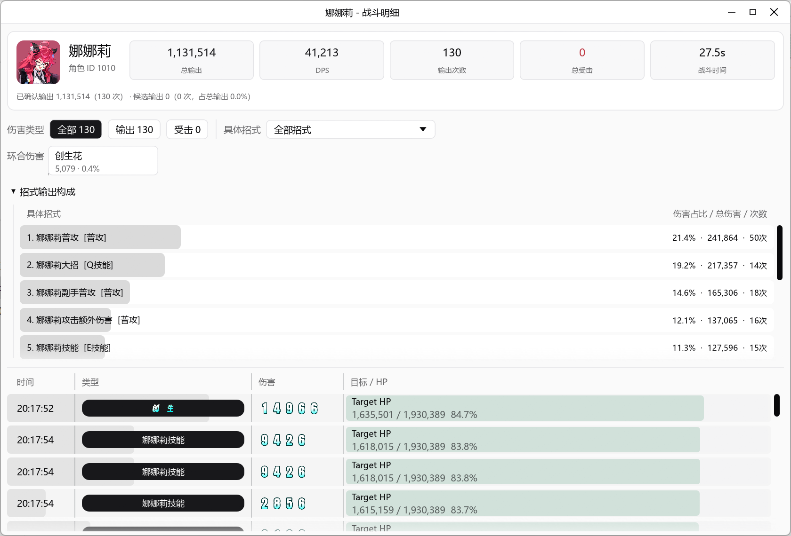
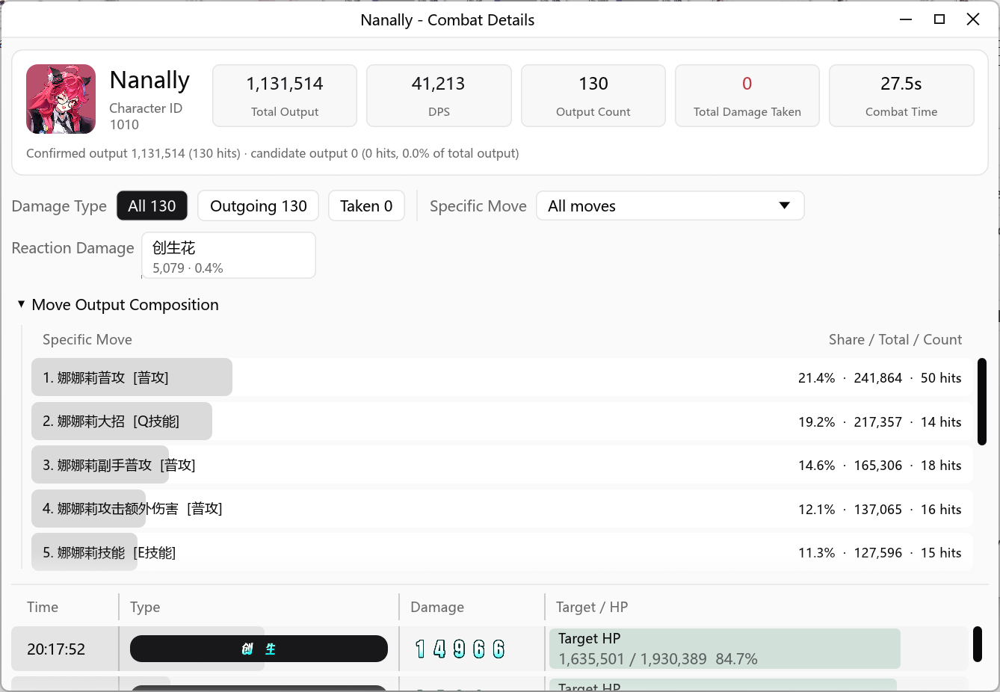
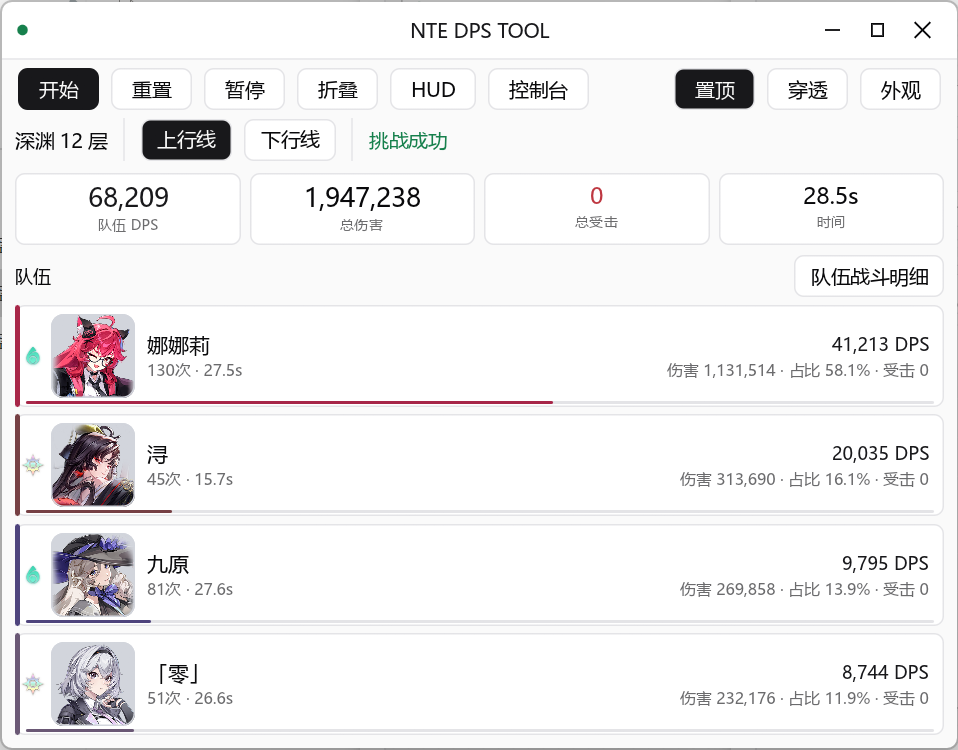
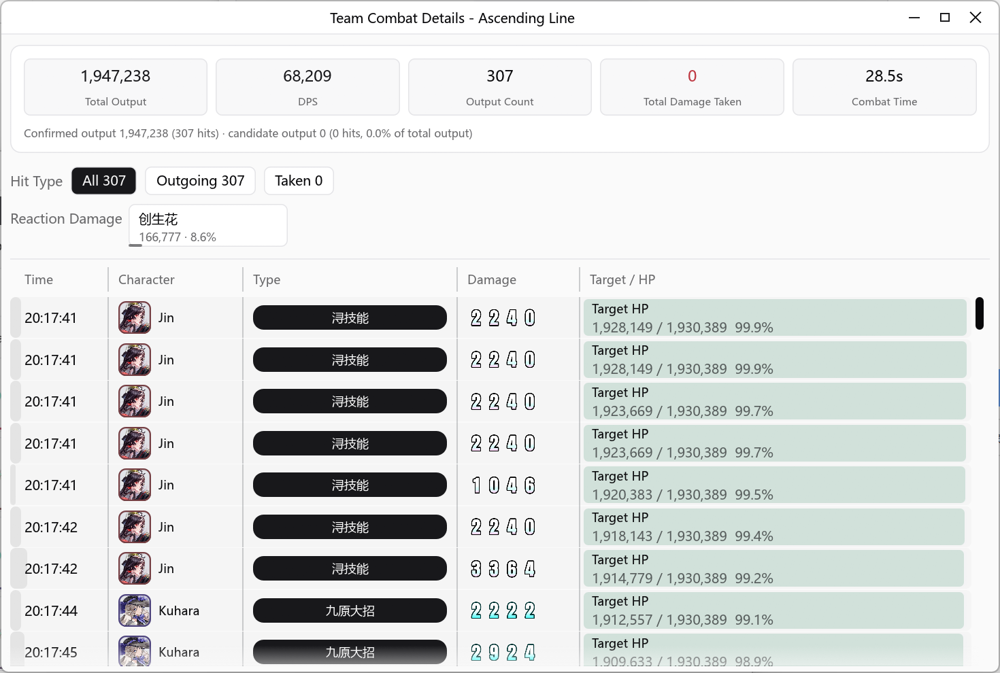
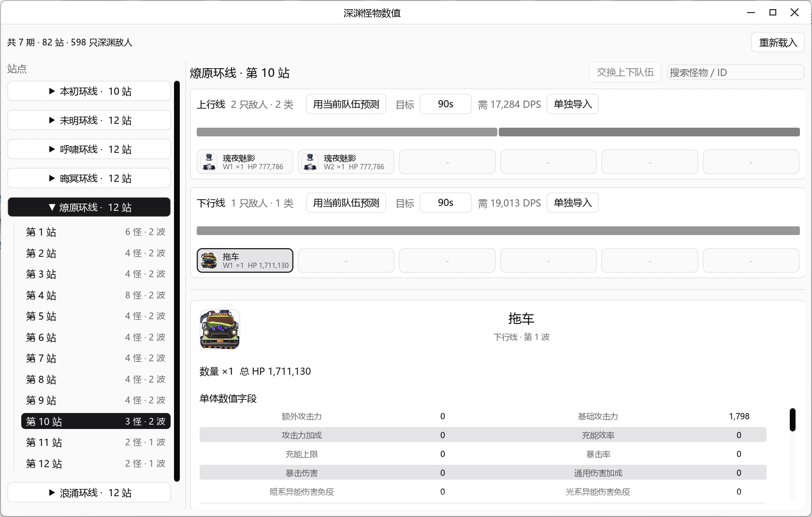
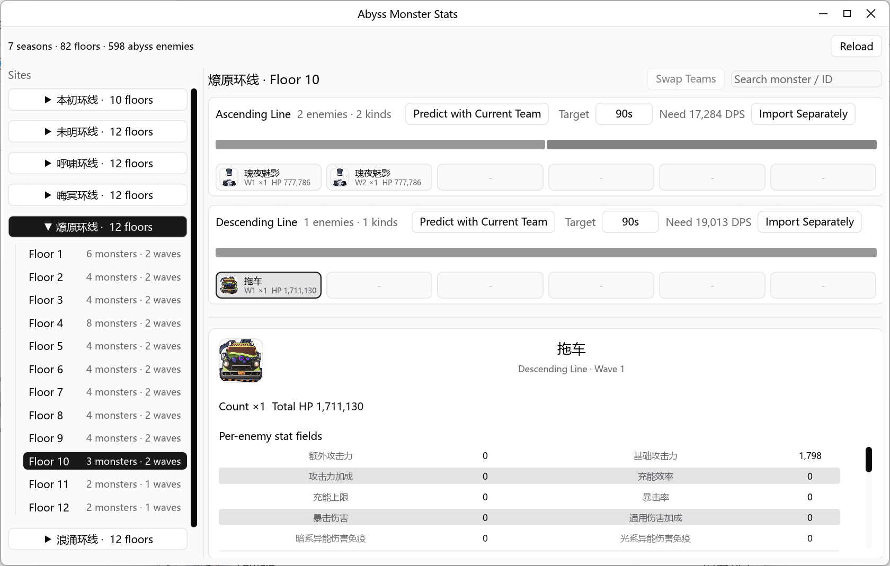
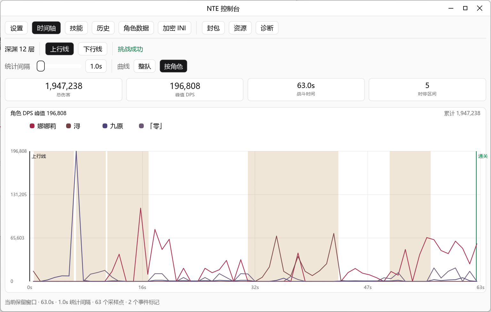
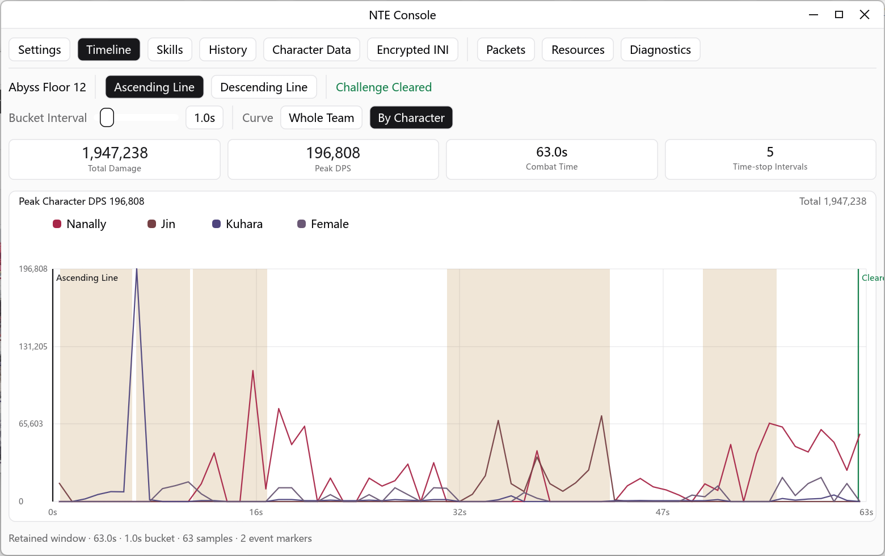
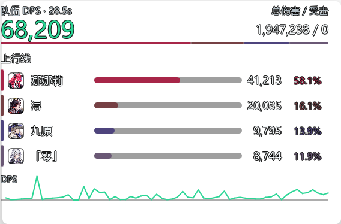
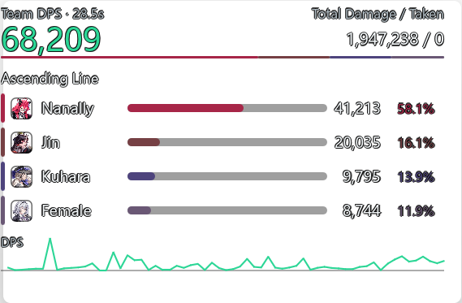
记录单场战斗的总伤害、DPS 曲线和命中明细，找出输出循环的瓶颈。Record total damage, DPS curve, and hit details to find rotation bottlenecks.
按角色对比伤害占比与技能贡献，验证不同队伍的输出表现。Compare damage share and skill contribution across characters and teams.
用历史队伍 DPS 与静态怪物 HP 估算清怪时间，或反推目标 DPS。Use historical team DPS and static monster HP to estimate clear time or target DPS.
导出 JSON / PCAPNG 离线分析，或导入样本做可复现的解析回放。Export JSON / PCAPNG for offline analysis, or import samples for reproducible replay.
安装 Npcap，建议在安装时勾选 WinPcap API-compatible Mode。Install Npcap and enable WinPcap API-compatible Mode during setup.
在 Releases 下载 nte-dps-tool-windows-x64.zip，解压到可写目录并运行 nte-dps-tool.exe。From Releases, download nte-dps-tool-windows-x64.zip, extract it to a writable folder, then run nte-dps-tool.exe.
以管理员身份运行工具，启动 NTE 客户端后点击开始捕获。程序会自动尝试选择活动网卡和本机 IP。Run the tool as Administrator, launch NTE, then click Start Capture. The app will try to select the active adapter and local IP automatically.
绝大多数玩家：只需下载 nte-dps-tool-windows-x64.zip。不要下载 nte-core-windows-x64.zip；其中的 nte-core.exe 没有图形界面，双击后退出属于预期行为。Most players: download only nte-dps-tool-windows-x64.zip. Do not download nte-core-windows-x64.zip; its nte-core.exe has no graphical interface, so exiting after a double-click is expected.
nte-dps-tool-windows-external-resources.zip 仅适合需要自行修改外置 res/ 资源的高级用户。nte-dps-tool-windows-external-resources.zip is only for advanced users who need to modify external res/ assets.
默认工作流通过 Npcap 被动读取本机相关 UDP 流量，覆盖实时 DPS、角色与技能统计、历史对比、深渊统计以及 JSON / PCAPNG 回放。The default workflow uses Npcap to passively read relevant local UDP traffic. It covers live DPS, character and skill statistics, history comparisons, Abyss statistics, and JSON / PCAPNG replay.
精确时停扣除等少数高级能力需要可选原生插件。它默认不启用，需在 Console → Mod 工坊 中明确确认后才会安装到所选客户端。A small set of advanced capabilities, such as precise time-stop deduction, requires the optional native plugin. It is disabled by default and is installed to the selected client only after explicit confirmation in Console → Mod Workshop.
dwmapi.dll，工具会保留该文件并报告冲突。启用前请阅读 插件说明。Close the game before changing plugin installation state. If the target folder already has another dwmapi.dll, the tool preserves it and reports a conflict. Read the plugin documentation before enabling it.本项目为独立社区工具，与 NTE 游戏发行方、开发方、平台方或相关权利方无从属、授权、背书或合作关系。 This is an independent community tool with no affiliation, authorization, endorsement, or partnership with the NTE publisher, developer, platform, or related rights holders.